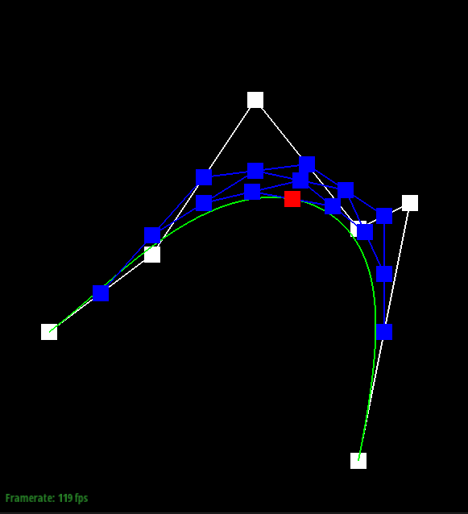
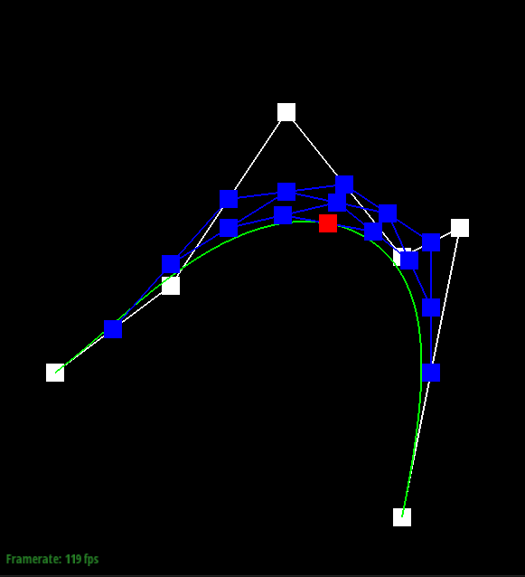
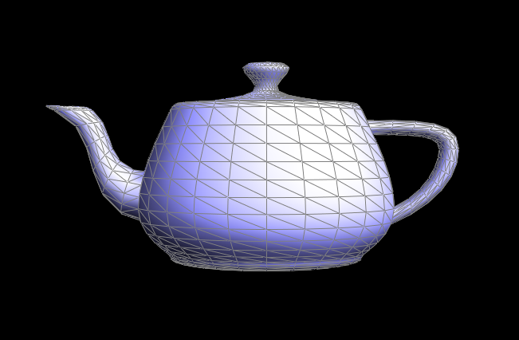

Throughout this homework, I used Bezier curves (and then surfaces) to generate smooth meshes. This allows objects to more easily look round as opposed to blocky. In the latter half of the homework, I was manipulating triangle meshes. By creating edge flip and then edge split functions, I was able to make an algorithm that can upsample triangle meshes. This can be used to increase the quality of an object being rendered, at the cost of more space being needed.
Task 1:
De Casteljau's algorithm is a recursive algorithm that can be used to generate bezier curves, which are used in font design and animation due to their smooth and satisfying nature. The algorithm works by starting with a set of control points that influence the output curve. Then, the algorithm recursively determines more points using linear interpolation between control points that are next to each other. These additional points are all generated using the same ratio between the two control points. This is done yet again on the additional points that were generated. For example, if you begin with four control points, the algorithm finds three intermediate points between them. Then, it finds two intermediate points between those. Finally, it finds one point between those, which is a point on the bezier curve. To generate the full curve, this is repeatedly evaluated as the ratio used in the linear interpolation varies between 0 and 1.
I implemented this algorithm by creating a function that does one step of the algorithm each time it's called. For example, if you pass in 4 control points, it will return the 3 intermediate points. To do this, I iterate through each pair of adjacent control points and calculate the location of the new point at a specific ratio.
Here is an example that walks through each step of generating a point on the bezier curve. The last picture shows the full curve.
 

To show how the curve changes, I moved some of the control points. I also changed the ratio to show how it finds a different point on the curve:
Task 2:
De Casteljau's algorithm can also be used to generate bezier surfaces. Instead of having control points that lie on some plane, they are in a three dimensional grid. Now, to find a point on the bezier surface, two ratios are needed; one for each axis that the algorithm will be run on. This means that all of the vectors of control points along one of the axis will be recursively linearly interpolated (Task 1 done on each of the vectors of control points). Each vector of points returns a singular point after this, but because there are mutliple original vectors, this results in a singular vector of points along the other axis. Then De Casteljau's algorithm can be used again along this set of points to find the final point on the surface. Then, similarly to task 1, this is done for every set of ratios ranging from 0 to 1 in both directions to find the full bezier surface.
Here is an example:
Task 3:
In this task I calculated area-weighted vertex normals to use Phong shading as opposed to flat shading. This causes the shading texture to look much smoother, instead of having sharp changes at the edges of the triangles. To find the area-weighted normal vector at a specific vertex, I iterated through the faces that touch the vertex and calculated their areas by taking a cross product of two of the triangle vectors, normalizing it, and multiplying it by 1/2. Then, I multiplied the normal vector (the cross product result) by the area. Next, all of these values for the different faces that surround the original vertex are summed. Finally, this sum is normalized, giving us our area-weighted vertex normal for the original vertex.
This is what flat shading looks like:
This is what Phong shanding looks like:
Task 4:
In this task, I found a way to flip an edge in a triangle mesh. The mesh utilizes the HalfedgeMesh class, which keeps track of edges, vertices, faces, and halfedges (one side of an edge). This class makes it easy to search around a mesh and make changes, like flipping an edge. To flip an edge, I created a function that takes in the edge that needs to be flipped and finds all of the vertices, edges, halfedges, and faces in the two triangles that share the original edge. Then, I went through each half edge and reassigned the vertex, edge, face, and other half edges (the next one in the triangle and the opposite one on the same edge) that are adjacent after the flip. I also went through every vertex, face, and edge and reassigned the halfedge that each one points to after the flip. By manipulating the pointers in the mesh, the edge is flipped. I expected to need some thorough debugging for this task, but surprisingly, it worked on my first attempt!
Here is an untouched mesh:
Here is the same mesh after I have flipped some of the edges:
Task 5:
In this task, I found a way to split an edge in a triangle mesh. In other words, for a specific edge, my algorithm finds the midpoint, creates a vertex at the midpoint, splits the edge into two that connect at the midpoint, and adds two more edges that connect from the midpoint to the opposite vertices of the two triangles that share the original edge. I implemented this in a similar way to how I flipped an edge. I began by finding all of the vertices, edges, halfedges, and faces in the two triangles that share the original edge. Then I create the new edges, halfedges, vertices, and faces that show up after splitting the edge. Finally, I reassign the pointers for all of the objects in that portion of the mesh in a way that splits the edge. I went through every halfedge, including the new ones, and reassigned the vertex, face, edge, next halfedge, and opposite half edge that the halfedge points to after the split. I also went through every vertex, face, and edge and reassigned the halfedge to the one they point to after the split. This is not that much harder than flipping an edge; you just have to reassign pointers. Like task 4, I expected needing to debug this, but surprisingly, it worked on my first attempt!
Here is an untouched mesh:
Here is the same mesh after I have split some of the edges:
Here is another untouched mesh:
Here is the same mesh after I have split and flipped some of the edges:
Task 6:
I implemented loop subdivision for upsampling the triangle meshes. To do this, I began by iterating through all of the existing vertices and calculating their positions after the upsample. The new position is calculated with a weighted average based on surrounding vertex positions in the original mesh. I didn't immediately update their positions as I found them, because changing the positions would affect the weighted averages calculated later as it iterates through the vertices. Then, I iterated through each edge in the mesh and found the positions of the new vertices that will appear after the edges are split. These new positions are calculated by using a weighted average of the positions of the vertices in the two triangles that share the original edge. These values are stored until the actual splitting is completed. Now that all of the new vertex positions are known, every edge is split. To do this, I iterated through each edge and called my edge split function from task 5. One important thing about this step is making sure that only the edges in the original mesh get split. After splitting the first edge, three new edges are made and placed into the mesh. These should not be split again, so I marked them as new (as well as the new vertex) and made sure to only split old edges (connects two old vertices). Next, some of the edges need to be flipped. I iterated through each edge and only flipped them if it was a new edge that connected an old vertex to a new vertex. All other edges were not changed. Finally, I iterated through each vertex and updated their position to what was calculated in the beginning (both the updated positions of preexisting vertices as well as the positions of newly generated vertices).
Here is an example (upsampling a cube):
One thing that is immediately noticable is that the corners stay sticking out. When using loop subdivision, all of the sharp corners and edges somewhat maintain their location. By splitting some of the edges prior to beginning the upsampling, you can reduce this effect. Having more connections to the corners pulls them in farther.
Here is the same cube after I manually split some of the edges:
This resulted in a much better sphere than before. Here is the upsampled version of this cube:
Another thing that's noticable from the first cube being upsampled is that it isn't symmetrical. To remove this, I split and then flipped some of the edges prior to upsampling. In doing so, the cube was completely symmetrical before upsampling, which makes it maintain the symmetry much more. This wasn't the case before. Also, adding a vertex on each edge of the main cube helped keep it more symmetrical. Without these vertices, there aren't very many edges on the cube, so when you upsample, it does them sequentially, causing a noticable differnece. By increasing the number of edges prior to upsampling, when they are split sequentially, it still isn't completely symmetrical, but it's significantly less noticable. In other words, the size of each part is smaller so the asymmetrical differences are smaller.
Here is the same cube after I manually split and then flipped some of the edges:

This resulted in a significantly more symmetrical cube. Here is the upsampled version of this cube: